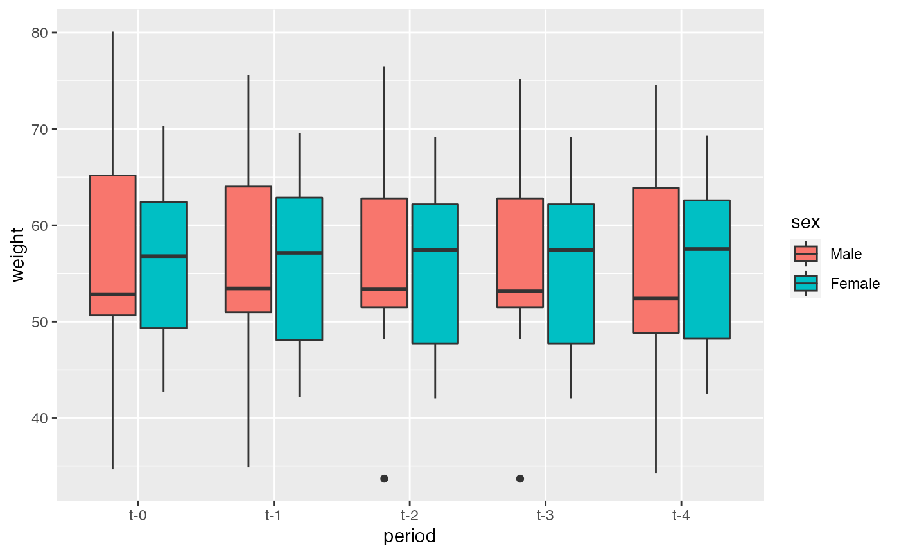

Summary statistics
For summary statistics like mean and standard deviation you can use the base function mean() and sd(), for median and interquartile range you may use median() and IQR().
But because the data is in long format you must consider its structure in order to analyse it properly.
Lets explore the mean weight for each time period. For that we can use data.table for ease of use (for details on data.table please see this). It is worth noting that the data.table package is imported directly into the package when is loaded.
swimmers[, .(mean_weight = mean(weight, na.rm = TRUE)), period]
#> period mean_weight
#> 1: t-0 56.54167
#> 2: t-1 55.91154
#> 3: t-2 55.70000
#> 4: t-3 55.67500
#> 5: t-4 55.43478But what if we want the mean weight between males and females for each time period? We could write it this way. For that we will use tapply() (for nested operations).
swimmers[, tapply(weight, sex, mean, na.rm = TRUE, simplify = FALSE), period]
#> period Male Female
#> 1: t-0 56.79167 56.29167
#> 2: t-1 56.15000 55.63333
#> 3: t-2 56.00000 55.40000
#> 4: t-3 55.83333 55.51667
#> 5: t-4 54.94545 55.88333But we can pass any function that we want into tapply() (that returns an object of length one). Lets try create a custom function that computes the mean and standard deviation.
my_mean_and_sd <- function(x) {
x <- x[!is.na(x)] #remove missing values
mu <- mean(x) # get the mean of x
sigma <- sd(x) # and standard deviation from x
# We round values into 1 decimal place
mu <- round(mu, digits = 1)
sigma <- round(sigma, digits = 1)
result <- paste(mu, "±", sigma) # finally we merge both results into one string
return(result) # and get back the results
}Now lets try our custom function to get the mean and standard deviation of weight between males and females for each time period.
swimmers[, tapply(weight, sex, my_mean_and_sd, simplify = FALSE), period]
#> period Male Female
#> 1: t-0 56.8 ± 12.1 56.3 ± 9.1
#> 2: t-1 56.1 ± 11.1 55.6 ± 9.7
#> 3: t-2 56 ± 10.8 55.4 ± 9.6
#> 4: t-3 55.8 ± 10.6 55.5 ± 9.7
#> 5: t-4 54.9 ± 11.6 55.9 ± 9.6You can replace the variable weigth for any of the variables available in the dataset. For details on the dataset, check the documentation.
Plot the data
For plotting you can use your favourite library (ggplot2, lattice) or the default base-r plotting system. Lets try an example with base-r plotting system.
For this example lets plot the change of mean weight across time periods between males and females.
# Get variables (first bracket) and then drop missing values (second bracket)
plot_data <- swimmers[, .(sex, period, weight)][, na.omit(.SD)]
# Plot data using the mean
with(plot_data, interaction.plot(period, sex, weight, fun = mean))
# Now plot data using the median
with(plot_data, interaction.plot(period, sex, weight, fun = median))Quite an interesting picture! Now lets try a boxplot of weight across time grouped by sex (sounds hard to do, but not really). Here we will use ggplot2 package, for details see this.
# install.packages("ggplot2")
library(ggplot2)
ggplot(swimmers, aes(x = period, y = weight, fill = sex)) +
geom_boxplot()
In just two lines of code we reproduce an awesome and informative graph!